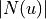
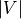

oass.GradientCalculator
- class oass.GradientCalculator(gamma=1, baseline_strategy='random', extra_function='None')[source]
Bases:
objectThe gradient calculater.
This part is implemented completely based on
numpy, so it naturally supportsPyTorch,TensorFlowand other deep learning frameworks.- gamma
The discount factor. Default: 1.
- Type
float
- baseline_strategy
The calculation method of baseline value. It can be
"random","self"or"zero". Default:"random".- Type
str
- extra_function
The extra function applied on
action_prob. It can be"none"or"log". Default:"none".- Type
str
- calculate_gradient(G: oass.StaticDirectedAcyclicGraph.StaticDirectedAcyclicGraph, action_prob, node_reward, edge_reward)[source]
Calculate gradient for a DAG.
- Parameters
G (StaticDirectedAcyclicGraph) – The DAG.
action_prob (array-like type) – The probabilities that the agent chooses each edge. The way it is saved needs to be consistent with
G.edge. At each node u,action_prob[u]is a  x batch_size matrix.node_reward (array-like type) – The reward when arriving at each node. It is an array that contains  reward values.
edge_reward (array-like type) – The reward when passing each edge. At each node u,
edge_reward[u]is an array that contains reward values.
- Returns
The mathematical expectation of the subsequent rewards when starting with each node. D (list(np.array)): The gradient value for updating
action_prob.- Return type
E (np.array)
Note
For ease of use,
action_probmay contain additional values, but must cover all the edges.
- get_path(G: oass.StaticDirectedAcyclicGraph.StaticDirectedAcyclicGraph, action_prob, start_node, strategy='argmax')[source]
Choose the edge with the highest probability to get a path.
- Parameters
G (StaticDirectedAcyclicGraph) – The DAG.
action_prob (array-like type) – The probabilities that the agent chooses each edge. The way it is saved needs to be consistent with
G.edge. At each node u,action_prob[u]is a dimension vector.start_node (any hashable type) – The starting node.
strategy (str) – The strategy to choose actions. It can be
argmaxorprobability.
- Returns
The path determined by
action_prob.- Return type
path (list)